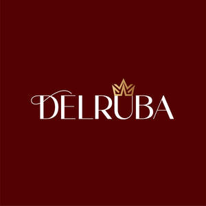

Trade Mark Journal No.2025/028 11 July 2025
UK00004227935 2 July 2025 (3)

- Class 3
- Makeup; Make-up; Facial makeup; Lip makeup; Nail makeup; Eye makeup; Theatrical makeup; Natural makeup; Make-up remover; Skin make-up; Make-up primer; Make-up removers; Make-up primers; Make-up powder; Powder (Make-up -); Multifunctional makeup; Foundation make-up; Make-up foundation; Make-up pencils; Make-up for the face; Make-up for compacts; Eye make-up; Make-up foundations; Make-up palettes containing cosmetics; Chalk for make-up; Make-up removing lotions; Eye make-up removers; Eyes make-up; Make-up kits; Make-up base; Make-up preparations; Make-up removing creams; Eyelid doubling makeup; Makeup setting sprays; Make-up removing gels; Hair cosmetics; Make-up for the face and body; Facial concealer; Hair mascara; Make-up preparations for the face and body; Skincare cosmetics; Make-up removing preparations; Hairstyling serums; Facial creams [cosmetics]; Facial gels [cosmetics]; Hairstyling masks; Make-up removing milks; Make-up removing milk; Skin masks [cosmetics]; Eyeliner; Cosmetics for the use on the hair; Cosmetics; Body and facial creams [cosmetics]; Skin moisturizers used as cosmetics; Lip cosmetics; Compacts containing make-up; Cosmetic hair lotions; Body and facial gels [cosmetics]; Mascara; Eye-shadow; Fake blood being theatrical make-up; Eyeshadow; Lip stains [cosmetics]; Cosmetics for eye-lashes; Nail primer [cosmetics]; Eyebrow cosmetics; Moisturisers [cosmetics]; Facial moisturisers [cosmetic]; Hair styling lotions; Facial cleansers [cosmetic]; Facial beauty masks; Cosmetic facial lotions; Facial lotions [cosmetic]; Nail cosmetics; Nail paint [cosmetics]; Lipstick; Colour cosmetics for the skin; Cosmetic facial masks; Facial masks [cosmetic]; Hair moisturizers; Cosmetic hair dressing preparations; Self-tanning preparations [cosmetics]; Anti-aging moisturizers used as cosmetics; Eye cosmetics; Hair care lotions [for cosmetic use]; Body creams [cosmetics]; Eyeshadow palettes; Nail polish removers [cosmetics]; Facial creams [cosmetic]; Facial creams [for cosmetic use]; Hair care creams [for cosmetic use]; Cosmetics for use on the skin; Tanning gels [cosmetics]; Colour cosmetics; Facial wipes impregnated with cosmetics; Beauty preparations for the hair; Skin fresheners [cosmetics]; Nail varnish remover [cosmetics]; Night creams [cosmetics]; Skin cleansers [cosmetic]; Skin moisturizer masks; Beauty care cosmetics.
TECHSOTIC LIMITED